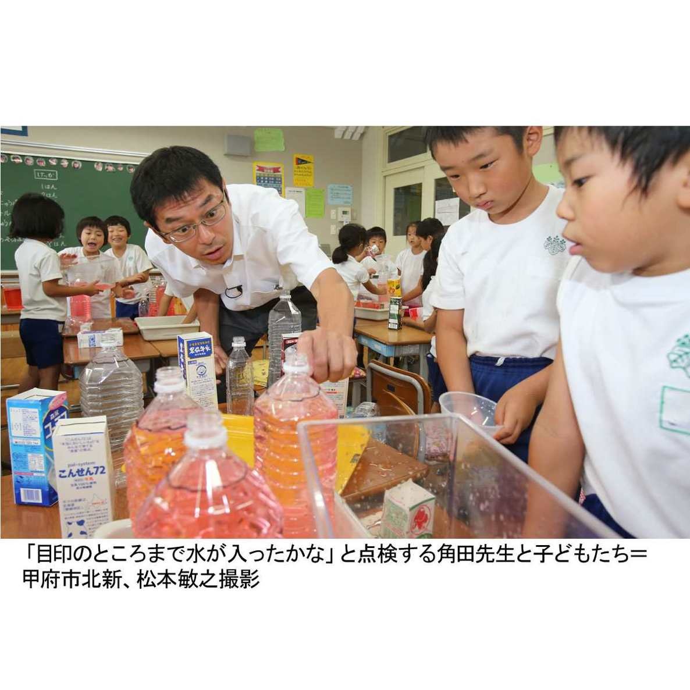
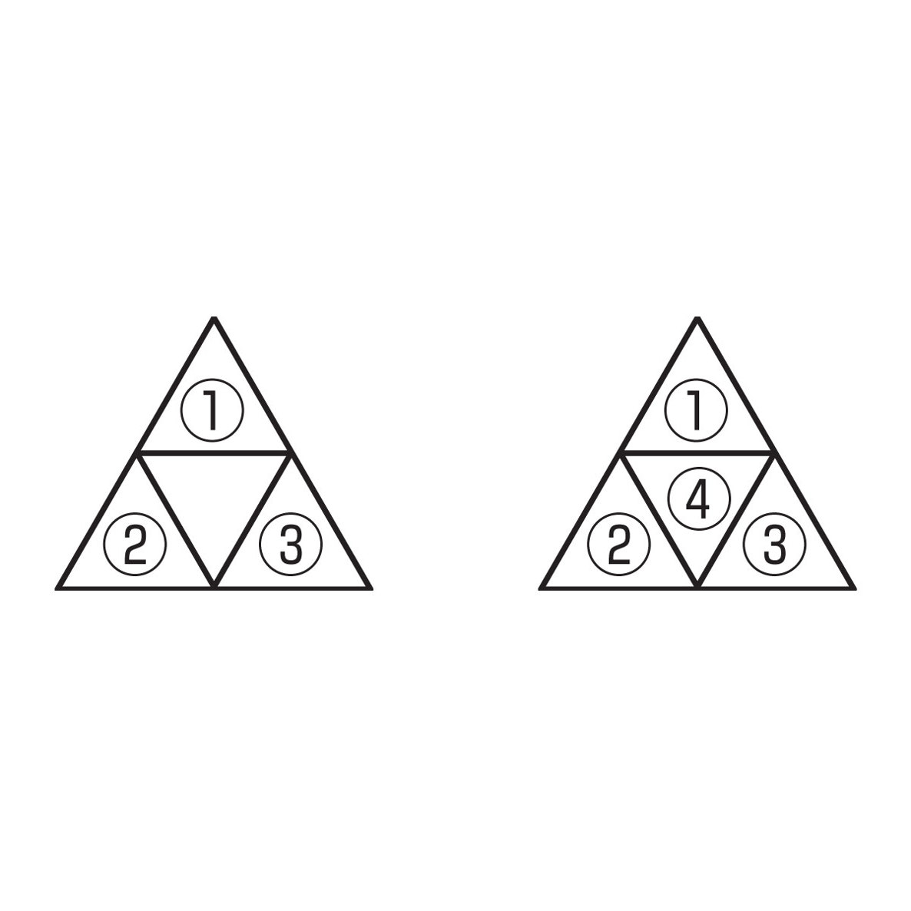

| こんな算数を習いたかった！ 大人がうらやむ「花まる」授業 (朝日新聞デジタルＳＥＬＥＣＴ) | |
| 朝日新聞 | |
| (2014) | |
小学生のころ「算数が苦手だった」という人は多いはず。もしかすると、そのまま中高生では数学嫌いになり、今に至る人もいるだろう。でも、もし小学生の時にこんな先生たちの授業を受けていたら......大の算数好きになっていたかもしれない。その授業は工夫に満ち、内容は見るからに楽しそうなものばかり。でも、「ただ楽しいだけではダメ」と、ある先生は言う。算数を通じて何を伝えたいのか、何を学ばせたいのか。算数と子どもたちへの愛情がたっぷり詰まった１２の授業。
内容紹介
小学生のころ「算数が苦手だった」という人は多いはず。もしかすると、そのまま中高生では数学嫌いになり、今に至る人もいるだろう。でも、もし小学生の時にこんな先生たちの授業を受けていたら......大の算数好きになっていたかもしれない。その授業は工夫に満ち、内容は見るからに楽しそうなものばかり。でも、「ただ楽しいだけではダメ」と、ある先生は言う。算数を通じて何を伝えたいのか、何を学ばせたいのか。算数と子どもたちへの愛情がたっぷり詰まった１２の授業。
初出
朝日新聞 二〇一三年九月一日～二〇一四年五月十七日
第１章 紙飛行機、グラフで分析
第２章 この水、ボトル何本分？
第４章 わり算、答えは屋根の上
第５章 生データ、見抜いたぞ
第６章 混んでる電車はどっち？
第７章 図形動かし頭の体操
第８章 図形パズルで分数見えた
第９章 トランプで正負、鏡の世界
第１０章 ライオンの数、足す？引く？
第１１章 数の並び、決まり見つけた
第１２章 ２乗の世界、△で納得
大阪・泉大津市立楠小学校
下道成人さん（４５歳）
くるくる、ふわり、ピューッ。５年２組の３４人が作った紙飛行機で、体育館がにわかに「飛行場」になった。「いくでー」「おー」
下道成人先生の算数で、みんなは紙の重さや尾翼の高さなど、いろいろな条件を変えた紙飛行機で飛行時間を計測した。さあ、どんな飛行機が長い時間飛べるのか。
基準形の紙飛行機は、１・５グラムの漫画本サイズのコピー用紙で作り、飛ばす時に持つ部分、「尾翼」の高さを３センチ、尾翼と主翼との角度を１２０度とした。
基本の折り方をそろえ、細部の条件を一つだけ変えることにした。みんなが考えた条件は（１）用紙サイズ（２）用紙の重さ（３）全長（４）尾翼の高さ（５）主翼の角度だ。それぞれ調べたい数値を変えて、飛行時間を計ることになった。
さあ、実験だ。「～号」と名付けたり、模様を描いたり、かっこいい飛行機が勢ぞろい。２人１組で１人が紙飛行機を飛ばし、もう１人がストップウオッチで時間を計る。「めっちゃ飛ぶぞー」「遠くまで行った！」。飛び上がってガッツポーズする子も。
「軽い半紙は風の抵抗に弱いから、あまり飛ばないんじゃないかな」と推測する男の子がいた。０・７グラムの半紙で３回飛ばし、平均の飛行時間を表に記入する。半紙の紙飛行機は回転しながらふわふわとゆっくり宙を舞った。１・５グラムのコピー用紙は勢いよく遠くまで飛んだ。「おーっ」
平均の飛行時間は半紙は３秒、コピー用紙は２・９秒だった。別の子は半紙が１・９秒、コピー用紙が１・７秒、一番重い画用紙（３・４グラム）が１・２秒と、半紙が最も長い時間飛んだ。
主翼の角度はどうだろう。みんなは折る角度を変え、３０度、６０度、９０度、１２０度と試した。
この単元は「グラフを使って調べよう」。みんなは実験後、教室に戻り、データをもとに、グラフ用紙に折れ線グラフを描いた。「調べたことについて何が言えるか考えてみよう」と先生。
みんなは、縦軸は飛行時間、横軸は紙の重さや全長など、調べた項目ごとに数値を変化させた。「問題→計画→データ集め→分析→新たなアイデアを考えるという統計的な手法を大切にしています」と先生は狙いを説明する。
横軸に尾翼の高さの目盛りを打っていた女の子は、等間隔ではなく「３、４、２・３、４・１」と大小の数値を織り交ぜて書いていた。「目盛りの数値は同じ間隔で書かないかん」と先生は助言し、折れ線グラフの目盛りや点の取り方などの基本をおさらいした。
最後に、みんなが描いたグラフを「尾翼の高さ」「紙の重さ」など、調べた項目ごとにずらりと黒板に並べ、共通点を探した。
折れ線グラフの山がなだらかで、変化が少なかったのが尾翼の高さ。「これは飛行時間にあまり影響なさそう」と先生。
主翼の角度は３０度、６０度よりも、開き方の大きい９０度や１２０度の方が長時間、飛んだ。紙の重さは最も軽い半紙が長い間、飛ぶという結果のグラフが多かった。
「もう少し、グラフをよく見てどれが飛ぶか分析しよう」と先生は言い、次はさらに長い時間飛べる紙飛行機を作ることになった。
〈はってん はっけん〉
携帯電話の料金どちらがお得？
「よく飛ぶ紙飛行機」は算数や総合学習で６時間かけて取り組んでいます。グラフや平均値など、学んだ知識を総合的に生かせます。
紙飛行機は、だれでも遊んだ体験があり、親しみやすいため、学習教材に選びました。グラフから傾向を分析、紙飛行機の改善につなげるという過程で「算数の力ってすごいな」と実感できます。
グラフを読み取るという課題では、６年生で架空の２種類の携帯電話の料金を取り上げました。Ａ社は１分間４０円、Ｂ社は１分間７０円で５１分目からは１分間１０円です。どちらがお得？
グラフでそれぞれの料金プランのよい点をアピールするプレゼンを考えさせましょう。Ｂ社のグラフは傾きが急ですが、５１分目から緩やかになります。１００分で両社の料金が同じになり、１０１分目からはＢ社が得です。グラフで表すことのよさや判断材料として活用できることが学べますよ。
山梨大学教育人間科学部付属小学校
角田（つのだ）大輔さん（４０歳）
スクリーンに歯磨きをする角田大輔先生の映像が登場すると、２年１組のみんなは大喜び。あれれ、丁寧に磨いているけれど、水道の水を流しっぱなしだ。「ダメなことしている」「もったいないお化けでるよ」と、みんなは口々に言った。さあ、ここで問題。「先生は、歯磨きをするのにどのくらい水を使ったか」。算数の「水のかさ」の授業だ。
「無駄に使った水の量を予想しましょう。理由も書けるかな」と先生は水槽にためた水を見せた。見やすいように水を赤色に着色してある。みんなはこれまでの授業で１リットルマスを使っており、１リットルの量を体感している。
そこで、１リットルをもとに量を予想してみた。「２リットル」「４リットル８デシリットル」。いろいろな予想が出た。「５リットル」と答えた男の子は「水槽の真ん中に１リットルのペットボトルが４本入りそう。端にも１リットルぐらい入る」と根拠を説明した。
「量感を育てること、ある単位のいくつ分という見方ができること」と先生は狙いを説明する。
実際に量ろう。先生は、水のかさを量るために使う入れ物をいろいろ準備した。２リットル、５デシリットル（５００ミリリットル）のペットボトルと、給食で出る１デシリットルの麦茶パック、２デシリットルと１リットルの牛乳パックの計５種類で、いずれも身近な物だ。「麦茶パックだと小さいから何回も量らなくちゃいけない」「２リットルならやりやすそう」などの意見が出た。
８班に分かれ、等量の水が入った水槽が配られた。「どの入れ物を使えば、上手に量れるかを相談しながらやって下さい」と先生。使う道具や方法を自分たちで考えさせるのも角田先生流だ。
ある班は、水槽の水を、ふたを開けた１デシリットルの麦茶パックで少しずつくみ出し、それを、じょうごをあてた２リットルのペットボトルの中に注いだ。「１９杯」「２０杯」「こぼさないで」とかけ声をかけながら、次々に、水槽の水をくみ出す連係プレーが際立った。
また、別の班では、５デシリットルのペットボトルに注目した。ちょうど５デシリットルのところには先生がペンで目印を記入してあるが、ぴったりと水を入れるのが難しい。「印よりあふれた」「こっちは足りないよ」「じゃあ、水を移そう」と微調整を繰り返した。

結果発表だ。「同じかさの水だったけど、量り方が違ったよね。式で表せる？」と先生は聞き、各班に聞いて式を黒板に書いた。
２リットルのペットボトルで量った班は３本分。
２＋２＋２＝６リットル
１リットルの牛乳パックで計量した班は６本分。
１＋１＋１＋１＋１＋１＝６リットル
５デシリットルの班は、１２本のペットボトルがずらり。
５＋５＋５＋５＋５＋５＋５＋５＋５＋５＋５＋５＝６０デシリットル＝６リットル
「面倒くさーい」
「どの入れ物を使えば良かったかな？」と先生が聞くと、「２リットルのペットボトルだと一度にいっぱい入る」と答えが返ってきた。できるだけ大きな物で量る方が簡単なことをみんなは実感した。
最後に先生が「正かい６リットル」と紙を見せると、「イェーイ！」。教室が沸いた。
〈はってん はっけん〉
身近な容器使い液体の量感養っていこう
水の量の測定には日常生活でよく使う牛乳パックやペットボトルを使い、量感が育めるようにしました。
「水のかさ」の導入では、空（から）の水筒に水を入れ、一番たくさん入る「水筒チャンピオン」を決めました。牛乳や豆乳、麦茶パック、ゼリー容器など、班ごとに量る容器を決めて計量しました。量る単位が異なると、比べられないため、デシリットルやリットルの単位を教えました。
家庭でも、１リットルの牛乳を飲む時にコップに移し替えたら何杯分で飲み終わるかなど、「ある単位のいくつ分」を意識させる機会を作りましょう。コップ１杯は２デシリットルぐらいなので、５回ほどで飲み切れるなど、だいたいの量がわかることが大切です。
１リットルは形を変えても量は変わらないということも実験させたいです。底の広いプラスチックケースに１リットルの水を注ぐと、平らに浅く変形しますね。子どもたちにとって驚きがあるでしょう。
第３章 割った余りで順番ピタリ
東京・江戸川区立新堀小学校
石川大輔さん（３５歳）
５年生の算数の少人数授業。石川先生は、スクリーンに３歳になる娘の写真を映した。「保育園へ迎えに行った帰りに歌っていました。これ」。スクリーンが順に、ブタ、タヌキ、キツネ、ネコの顔の絵に変わる......。「わかった。♪コブタ、タヌキ、キツネ、ネコ......♪だ」。教室に歌声が響き始めた。
ここで問題。「９番目の動物は何かな。ノートに理由も書いて」
「図にしていいですか？」「記号でいい？」「どこから始めるかによって変わると思う」。どんどん声が上がる。数分後、声をそろえて、答えは「コブタ！」。
「ホントに？」と先生が言うと、女の子が黒板に表を書き始めた。「８番目の次でコブタです」
すると「ネコは４の倍数になってる」と１人が言い出した。「９は４の倍数に１余るからコブタ」と説明する子もいた。
ここで２問目。「では、９０番目は？」。ざわめきの後、「コブタ！」とだれかが叫んだ。「そうそう」と何人か。少し間をおいて「タヌキ」という子も。意見はバラバラだ。
「じゃあノートにやってみて」と先生。「えー？ 全部書くの？」
３分後、「わかった！ 決まりが見えた！ ４０ぐらいまで表にしたらわかるよ」と１人が叫んだ。
「じゃ、書いてもらおう」と先生。黒板の表に２４まで書いたところで......先生が「ストップ。ここまでで気づいたことは？」。
「タヌキとネコが交互に１０、２０、３０......となっていくよ」
「タヌキとネコは偶数。コブタとキツネは奇数」「９０は偶数だからコブタじゃないよ」
先生はニヤリ。実は、前回まで「偶数と奇数」を学んだからだ。偶数は「２で割った時、余りが０になる整数」。奇数は「余りが１になる整数」。余りを意識して整数を見極めるのが狙いなのだ。
子どもたちの発言はどんどん広がる。「４の倍数で９０に近いのが８８。だからコブタ、タヌキで、答えはタヌキ」「表の縦の列を見ると、間が４の倍数になっている」
先生は「４の倍数」と黒板に書いた。すると、男の子が前に出てきて、９０÷４＝２２...２と書く。
「この式の意味わかる人いる？」。１０人ほどしかいない。そこで今度は周りの友だちと相談。
数分後、みんなに意見を聞いた。「余りの２はタヌキの２」「１周４匹だからネコは４の倍数で、９０を４で割ると、余りが出るから......それが答え」
ここで先生は「どの動物かは余りでわかる」と黒板にまとめた。
では３問目。２１５番目は？
「奇数だからコブタかキツネだ」と即、声が飛んだ。「計算して解けるかな」と先生。
みんなノートに向かい２１５÷４を計算し始めた。
みんなで「キツネ！」の答え。
「本当？」。先生が１人の子のノートを見せた。なんと２１５番目まで表にしている。「あった。キツネだ」。みんなびっくり。
先生は言う。「計算が速いことを自慢するのでなく、自分の考え方で答えを導き、表現できる子に育ってほしい」
〈はってん はっけん〉
次の東京五輪、何曜日になるか計算してみよう
今回の学習では、余りに注目させることをポイントにしてみましたが、動物を４匹から５、６......と増やして、表の数の並び方を見てもおもしろいです。授業で１０、２０などに注目した子がいました。５匹なら？ ６匹なら？ 数感覚が養えます。
今回の方法は、カレンダーの問題にも使えます。例えば２０１３年９月１８日は何曜日だったか。１８を７で割って余り４。１日が日曜だから、日から数えて、日、月、火、水で水曜日です。
では２０年の東京オリンピックの開幕日、７月２４日は何曜日でしょう。１３年の９月、１０月、１１月、１２月の日数に、１４年元日～２０年７月２４日の日数を足して７で割る。やってみてください。金曜日になりますね。
７に注目するなら、１÷７、２÷７、３÷７、４÷７......と計算し、小数点以下の数をよーく見てみてください。順番だけがくるくる変わっていることに気づきましたか？
仙台市立小松島小学校
林和人さん（５７歳）
あまりのあるわり算の筆算は、子どもたちがつまずきやすい関門がいっぱい。関門を突破できるよう、林先生は３年１組のみんなに、筆算の方法を分かりやすく物語仕立てにして教えた。
さあ、物語の始まり。先生は、おじいちゃんの顔の絵を見せた。「えーっ」「何じいさん？」。みんなは大喜び。
「何でももったいながる、もったいながりじいさんです」と先生。わり算のあまりは、わる数より小さくなる。「たくさんあまるともったいない」というイメージと関連づけて学ばせようと、先生は面白い名前をつけたのだ。
先生は、漢字の部首の「がんだれ」に似ているわり算の筆算記号のような屋根を描き、「家」の中にもったいながりじいさんの絵を置いた。「じいさんのうちです。外でわんぱく小僧が遊んでいます」と言い、屋根の左の外側に３人のわんぱく小僧の絵を置いた。
さて問題。「もったいながりじいさんの家にミルクキャラメルが１６こあります。３人のわんぱく小僧がやってきてキャラメルを下さいと言いました。同じ数ずつあげます。１人分は何こでしょう」
みんなは「あまっちゃうよ」。女の子がかけ算の考え方で説明した。「３の段で１６の答えを探そうとしてもないから、３×５＝１５で、あまり１こになる」
先生はキャラメルに見立てた１６枚のマグネットを動かし、５こずつのかたまりを３人に分け、あまりの１こを見せた。そして「家」の中に１６こ―１５こ＝１こと、筆算の式を書いた。
「さて、この子どもたちはどこでキャラメルを食べたでしょうか」と先生は聞いた。「外」「屋根の上！」と元気な声。
「わんぱく小僧なので屋根の上で食べました」と先生は言い、「５こ」と上に書いた。分かりやすいように１６こに「ぜんぶの数」、３人に「いくつ分」、１５こに「分けた数」と札をはった。先生は「このお話は完成。算数だと簡単に書けます」と説明、「家」をわり算の筆算記号に書き改めた。
わり算の筆算では間違いやすいハードルがいくつかある。足し算や引き算の筆算では一番下に答えを書くため、一番下のあまりをわり算の答えと間違えるとか、わる数とわられる数の位置を逆に書くなどの混同がよくあるそうだ。
物語仕立ての筆算指導を長く続けている先生は「機械的に筆算を教えるより、屋根やもったいながりじいさんのイメージとつなげた方が、答えとあまりや、わる数とわられる数の位置を混同する子が少なくなった」と言う。
最後に２２÷４を筆算で解いた。「もったいながりじいさんの家の屋根だよ」と先生。「２２このキャラメルを家に残し、４人の子どもが元気に外で遊ぶ。２２こに近い４の段は４×５。５はどこに書くのですか？」「屋根の上」とみんな。「２２―２０＝２。あまりは２」と筆算を続けた。
「答えはいくつ」と先生が再度、聞くと、間違えてあまりの「２」と答える子がいた。やはりつまずきやすい点なのだ。「答えが下に出る気がするんだね。でも、一番下はあまり、屋根の上が答えだよ」と先生はもう一度、確認した。
〈はってん はっけん〉
２種類のわり算札やブロックのイメージで
わり算は大別すると２種類あり、意味を理解させることが大切です。例えば、「１８このチョコを３人に同じ数ずつ分けると１人分は何こになるか」のように、「全体量÷いくつ分＝１あたりの量」を求めるもの（等分除）と、「１８このチョコを１人に３こずつ分けると何人に分けられるか」のように、「全体量÷１あたりの量＝いくつ分」を求めるもの（包含除）です。
子どもたちには、等分除はトランプの札を１枚ずつ配る場面をイメージさせます。一方、包含除は「チョコ３こ」をひとかたまりにして分けるので、ゲームのテトリスで複数のブロックがまとまって落下する場面をイメージさせて、違いを意識させています。タイルを動かす活動も実際に採り入れています。
家庭でも、イチゴを分けたり、カードを配ったり、１リットルの牛乳やジュースを人数分つぎ分けたりする時などわり算を意識させるといいですよ。
島根大教育学部付属小学校
徳永勝俊さん（４３歳）
体育会（運動会）の伝統競技「３０秒レース」の結果から算数を学ぶ授業が始まった。３０秒レースとは、徒競走のように走り、３０秒間で何メートル走れたか、友だちではなく自身の記録と闘う競技だ。
前回の授業で、６年２組全員の記録の平均を出した。５年生の時は１６３メートル、６年生は１６３・６メートル。わずか６０センチの差しかない。
「個人では記録が伸びた人もいました。学級では成長したでしょうか」と徳永先生が問いかける。
「平均を見ると、ほんの少ししか成長してなかったのでがっくりしました」「さほど変わってなかったのでかなりショックでした」
みんな、意気消沈気味だ。
「他の方法だとまた違った結果になるかもしれない」と子どもたちが言い出した。あまり成長していないのが悔しかったようだ。
この単元は統計の一つ「資料の整理」。教科書や教材のデータを使えば数値が整って教えやすい。でも、どの授業も出来る限り身近なものを教材にする徳永先生は、あえてクラスの記録を使った。
「では今日はこの方法でやってみたいと思う」。先生が提案したのは「散らばり具合」。「これはどういうものだと思う？」
先生は黒板の真ん中より少し上に、長い紙テープを横にはり、１３０メートルから２００メートルまでの目盛りを書いた。一人ひとりの記録のカードを、５年生はテープの上、６年生は下に、目盛りに合わせてはらせてみる。全部はると......「うわっ、正規分布だ」とだれかが叫んだ。「６年は１６０メートル台が山になってる」。自分たちの記録だけにみんな真剣だ。
「これで５年生より６年生の方が成長できたと言えるかな？ 意見をノートに書いて」と先生。
「６年生は１５０メートルより下がいなくなったけれど、１９０メートルより上もいなくなったから......成長しているといえるかわからない」
「６年生の方が成長できたと思う。１５０メートル以上が増えたから」――。意見はかなり分かれた。
１人がこんなことを言い出した。「テープが黒板の真ん中より上にあるからスペースの関係で５年の方が固まって見える。カードを小さくして整理したら？」
先生はあえて上の方にテープをはっていた。そこから「整理」に結びつける狙いなのだ。
「じゃ、どうやって整理する？」と問うと「目盛りごとに固まりを作る」「棒グラフにする」。
各自の方法で書かせ、そのノートをタブレット端末で撮影してテレビ画面に映し出す。「柱状グラフ」にした子のノートが紹介された。５年と６年の記録が色分けして積み重ねてあり、見やすい。
「この散らばり具合で成長したとわかる？」「うーん......」
ここで授業は終了。もやもやを残して終わらせ、一息おいて次へつなげるのが、徳永流なのだ。
授業後もじっとノートを見つめる子たちがいた。「やっぱり成長しているかも」。生データの威力ここにあり。
〈はってん はっけん〉
値段と消費税、「比例」を使って考えてみよう
「算数は常に一つの答えに行き着く」と子どもは考えがちです。でも一つの答えへの近道を教えるのが教師の仕事ではない。習ったことをどう生かすかを教えなければ意味がないと考えています。
２年前は「豆つかみゲーム」も教材にしました。練習回数が多いほど、記録が上がるのかどうか。２０１３年の「比例」の単元では、消費税と値段の関係も考えました。
今回の「３０秒レース」は、実は「散らばり具合」だけでは成長が判断しにくい分布です。でも、次の授業できれいな柱状グラフにしたら、６年生の方は見事に１５０メートルより下の子がいなくなり、１６０メートル台は黒板からカードがはみ出すほど高い山になりました。これまで苦手だった子が伸びている。最高記録は、５年の時１９５メートルだった子が１９０メートルに落ちました。でも普段はもっと記録が出る子であることをみんな知っている。データだけで分析する危うさも実感できますね。
広島市立三篠（みささ）小学校
伊田忠司さん（５４歳）
「キューちゃんたちは空飛ぶ便所のスリッパに乗って......」と伊田先生が５年１組のみんなに紙芝居を読むと、どっと笑い声が起きた。伊田先生と絵の得意な先生が作ったオリジナル。算数の「単位あたり量」の勉強が始まった。
キューちゃんはお化けに似たキャラクター。３人の子どもたちと「ユトーリ王国」に墜落した。駅に行くと同時刻に同じ場所に行く電車が左右に２台止まっている。あれあれ、乗客が左の電車に乗ったかと思えば、右へ。混んでいる方の乗客は「つめ込み税」を払わなくちゃいけないらしい。税は１００ユトーリ、千円相当だ。
２両の電車に３１人、３両の電車に４５人が乗っている。どちらの乗客がつめ込み税を払うのだろう。
「みんなも、つめ込みゲームをやろう」と先生が提案。教室の床に電車の車両に見立てたマットを２枚、隣に３枚を並べて敷いた。
制限時間３０秒で、二つのマットに分かれて乗る。混んでいる方の電車の「乗客」は先生が一人一人に配った１００ユトーリ札のつめ込み税を払わなくてはいけない。
まず１７人が挑戦。「隣に行って」「戻って」と大騒ぎ。３０秒たち、笛がピーッ。２両に７人、３両に１０人だった。
次は１５人が挑戦。２両に６人、３両に９人。
紙芝居やゲーム、実験と、先生の算数はふだんからワクワクする活動がいっぱい。「自分たちが単位あたり量を構成する要素になり、混雑を体験したり、見たりすることで混み具合の概念がとらえられます」と説明する。
混み具合を求める方法を最初の問題「２両に３１人、３両に４５人」に戻って考えることになった。みんなは２両の方が混んでいると考え、理由を学習班で話し合った。
式を並べた班もあった。
２両 ３１÷２＝１５あまり１
３両 ４５÷３＝１５
先生は「何を求めたの？」とたずね、意味を考えさせた。
「３両の方が入る人数が多い」と考えた班や、「２両は１６人と１５人で乗っているが、３両は１両あたり１５人」と数をあてはめて考えた班もあった。
「１両あたりの平均の人数を求めると２両の電車の方が多い」と、平均に注目した班があった。
ここで、先生はそれぞれ違う水量が入ったペットボトルが３本並んだ装置を使い、一瞬の操作で３本とも同じ水位にして見せた。「車両の人数に偏りがあっても平均して１両あたりの人数を求めたらいいね」と言い、式を書いた。
３１人÷２両＝１５・５人（１両あたり）
４５人÷３両＝１５人（１両あたり）
「つめ込みすぎはどっち？」と先生が改めて聞くと、みんなは「２両」と答えた。
みんなのゲームの混み具合も黒板に式を書いて求めた。
７人÷２両＝３・５人
１０人÷３両＝３・３人（小数第２位を四捨五入）。２両はつめ込みすぎで、つめ込み税を払った。
６人÷２両＝３人
９人÷３両＝３人
こちらは同じ。
紙芝居の続き。キューちゃんたちはユトーリ王の温情でつめ込み税を免除された。みんなも免除。「やったー」
〈はってん はっけん〉
単位あたりの量、畑や地図題材に繰り返して定着
「単位あたり量」では、何をもとにするかが大切です。混み具合でも４５人÷３両＝１５人は、１両あたりの平均人数を示すことになりますが、３両÷４５人＝およそ０・０７両は、１人あたりの平均の広さ（車両）を示します。「１あたり」が何を示すか、繰り返して定着させましょう。
今後は、１アールあたりの畑の作物の収穫量や、大根とニンジンを１立方センチメートルに切り、重さを量ってつまりぐあいを比べるなど様々な形で、体感させます。
都道府県の人口密度では、人口を調べ、白地図の都道府県の中に人口１０万人をひとつの黒い点にして、広範囲にならして打ちます。北海道は白っぽくなり、東京は黒っぽくなります。混み具合の高い順に予想させるといいですよ。
都道府県別の面積を示し、１平方キロメートルあたりの人口を求め、人口÷面積（平方キロメートル）＝人口密度を定着させます。世界各国の人口密度も求めましょう。
福島・二本松市立岳下小学校
羽染聡（はぞめさとし）さん（４４歳）
「はい！」
封筒の中から二つの平行四辺形が描かれた紙を出し、羽染先生はパッと一瞬見せた。「どっちの面積が大きい？」「えーっ？」
どちらも同じくらいの大きさ。各辺の長さと高さが書き込まれている。だがアは底辺が下で６センチ、イは左横に７センチ。高さは５センチと４センチだが、底辺×高さという平行四辺形の面積の求め方を理解していないと一瞬で見分けられない。
先生は、悩む５年１組の子たちを見てニヤリ。紙を黒板にはって、底辺・高さの場所を確認し、計算で比較させた。
続いて、同じように封筒からパッと見せた２問目。二つの平行四辺形のうちイには高さが書かれていない。「えーっ、これじゃあわかんないよ」「何がいる？」「高さ」。先生はまたニヤリと笑い、高さがどこか、黒板で子どもに示させてから数値を教えた。アは５・５×５・４センチ、イは７×３・５センチ。小数の計算の感覚がないと今度は大小が比べられない。
「平行四辺形の大小を比べながら、感覚を鍛えていくんです」
３問目に出した二つは、方眼用紙に描かれていた。１マス１センチ四方。アは３×７センチで長方形に近い。イも底辺は３センチだがかなり斜めになった細長い平行四辺形だ。
教室から声が上がった。「イは高さがないんじゃない？」
先生はあえて底辺から垂直な線を何本も引いてみるが、どれも平行四辺形の外にはみ出してしまう。「あれっ？ ないよ」
高さを表す線が図形の外に出ても、面積の求め方は変わらない。でもなぜそうなのか、きちんと説明できる子は少ないという。

ここからが先生の狙い。子どもたちに立証させようというのだ。
同じ平行四辺形を描いた方眼用紙を子どもたちに配った。「描いても、切って移動させてもいい。変形させて求めてみてください。きちんと説明できるようにね」
全員が真剣な顔つきになった。追加の紙をもらって、何種類も方法を考える子も出てきた。
１０分後に発表。図〈１〉の子は上下半分に切って横に並べ、高さの線が図形の中に収まるようにした。〈２〉の子は真ん中で分割し、それぞれの平行四辺形の面積を合計する。〈３〉の子は、二つの三角形に分けて動かして考えた。〈４〉や〈５〉のようにバラバラにして長方形で考えようとする子や、〈６〉のように１センチごとに横にスライスする子、１８個の平行四辺形に分割する子も。
新しい方法が発表されるたび、みんなの目が輝く。人と違う方法、独創的な考えを出すことの魅力が教室いっぱいに広がった。
「やり方を覚えて計算するだけではなく、多様な感覚、考えを引き出すのも算数ですから」
最後に先生は、上下２本の平行な線の間に、底辺は変えず、角度を変えていくつか平行な２本の線を入れ、平行四辺形を複数作った。「どれが大きい？」
〈はってん はっけん〉
公式使う前に、厚紙や粘土で立体を作ろう
今回の授業は、平行四辺形の面積の求め方の単元ですが、立証するためには、すでに習ったほかの図形の面積の求め方や「等積変形」を使わなければなりません。分割してどの図形とどの図形が同じなのか。それを足し引きすることは、６年生の体積の学習や中学の因数分解にもつながっていくのです。
例えば、底面が平行四辺形の四角柱や三角柱の体積を求める時。いきなり「底面の面積×高さ」という公式を教えず、まずは厚紙や粘土でそういう立体を作ってみてください。高さ１センチのもの。高さを２倍したもの。
いろんな図形をいろんな形で分割融合させることを繰り返した子が、将来の高校、大学の受験の時にも図形感覚の鋭い子になる。小学校段階では、公式を覚えさせて、解かせることは簡単です。でも、それだけではいずれ壁に当たってしまう。小学生のうちに、いろんな方法、考え方を広げてください。
甲府市立湯田小学校
一瀬（いちのせ）孝仁さん（５０歳）
「●（○の左半分が黒、右半分が白の記号）」。一瀬（いちのせ）先生は黒板にこんなマークを描いた。「今日は午前中は雨だったけど午後に晴れたからこんなマークかな」
次に「今日はこの形を使って算数をします」。先生が見せたのは、正六角形の黄色いパターンブロック。「えーっ」。３年１組は、いきなりブーイング。
パターンブロックは、正方形や三角形など様々な形の板だ。これまでも図工の授業や休み時間にモザイク模様などを作って、図形感覚を育ててきた。正六角形は一番難しい形であることを子どもは知っているのだ。
ブロックと同じ大きさの正六角形を六つ描いたプリントが配られた。手元には黄色い正六角形のほか、赤い台形や青いひし形、緑の正三角形もある。「この正六角形をほかの色のブロックで敷き詰めます。ただし、全部同じ色でね」
スタートして５秒。「できた」「三つできた」「五つできた」と、次々声があがった。
３人が前で発表する。
ひとりは、赤い台形２枚で敷き詰めた。もうひとりは、青いひし形３枚で。もうひとりは、緑の正三角形６枚を使った。
形と枚数の関係から「分数」を学ぼうというのが、先生の狙いなのだ。教科書には、「１リットルの２分の１」など生活に身近な「量分数」が例示されている。だが、一瀬先生はあえてブロックを使い、高学年で習う割合や分割、図形の力も同時に鍛えていこうとしている。
「どうして黄色いブロックが赤で敷き詰められたの？」
先生の質問に、子どもたちは一瞬とまどったが、すぐに様々な答えを出し始めた。
「（赤は）黄色のブロックの半分だから」
「えっ、言い方が違う。正六角形の２分の１だから」。多角形の名称は、高学年で習う。だが、形のことならお得意の子も出てきた。
「赤は黄色の半径......」。六角形を円と見立てて説明を考える子。
「黄色の角の四つを半分にくっつけて......」。こちらは折り紙の発想だ。
「半分と２分の１は同じだと思う」「×２」「あ、だったら......」。ここで先生が「だったら？」と問い直す。「赤は黄色の÷２」。教室中が「あー」と納得。かけ算とわり算は反対なんだと、あちこちで言い出す。
一瀬先生は、子どもの発言はニコニコ受け入れ否定しない。子どもも安心してどんどん意見を交わし授業の流れを作る。
先生は、黒板にこう書いた。
黄色は赤の２倍。黄色は赤の２個分。黄色は赤の×２。
赤は黄色の２分の１。赤は黄色の半分。赤は黄色の÷２。
続いて「なぜ青で敷き詰められた？」「なぜ緑で敷き詰められた？」と、３分の１、６分の１の概念も引き出した。
「ところで、別々の色で２分の１や３分の１はできる？」と先生。みんな考える。ある子が前に出てきて、半分に赤１枚、もう半分に緑３枚を置いた。
「緑は赤の３分の１」
比べるもとが、黄色の六角形から赤の台形へ、自然に変わっていた。
〈はってん はっけん〉
通分や帯分数、いろんな形使い感覚鍛えよう
分数の学習で、同じ分母同士の足し算引き算は、さほど難しくありません。ところが分母が変わると途端に、わからなくなる。それは、分数の概念ができていないからです。もちろん、量分数も教えますが、いろんな感覚を鍛えるにはブロックも悪くない。
次の授業では、じゃんけんゲームをします。正六角形１枚と、台形２枚、ひし形３枚、正三角形６枚、計正六角形４枚分を全員に持たせます。２人でじゃんけんをして勝った方が好きなブロック１枚を相手からもらえる。何回かして、最後に手持ちのブロックを計算させて順位を決めます。ここで今回の学習が役立ちます。正三角形３枚は台形１枚と同じ。正六角形を１とすると６分の３＝２分の１。「通分」です。台形５枚集めた子は？ 正六角形２枚と２分の１。これが「帯分数」。知恵を出し合い洗練された知識に創り上げる。それが私の算数です。
大阪教育大学付属池田小学校
樋口万太郎さん（３１歳）
「トランプを使ったゲーム、ぴったんこ・マス・マスをします」と樋口先生が言うと、６年東組のみんなは大ウケ。既存のゲームをもとに先生がルールを考案、手持ちのカードの数を足し引きしながら、中学で学ぶ正負の数へつなげる。「マス」は英語で「数学」の意味だ。
４人一組になり、トランプの１～５のカードが各自にランダムに配られた。それぞれの手持ちは５枚。ジョーカー１枚を加えるので、１人だけ６枚。６枚の人が「親」だ。親が隣の人に１枚引いてもらい、これをババ抜きのように繰り返す。
先生の設定した数は「１０」。手持ちのカードの数の和が１０ぴったりになれば「マスマス」。一致しなかった子は１０との差が得点になる。得点の低い方が勝ち。ただしジョーカーは０とカウントする。「あかん」「なんでやねん、もうっ」の声が飛ぶ中、元気よく「マスマス！」。
８人が「マスマス」だった。２点や６点、１４点の子もいた。「得点が２点ということは、１０を基準に考えると何種類あるの」と先生。「８と１２」とみんな。先生は数直線をはった。男の子が「１０との差が２だから１２と８」と説明した。
６点の場合は「４と１６」。和が４になるのはスペード、ハート、クラブ、ダイヤのエースとジョーカーのときだけ。「めったにないよ」とみんな。
「０から二つ離れているのは＋２と―２という考え方は絶対値の概念です。まずは、１０を基準にして、理解を定着させたい」と先生は解説する。
次はルールを変更。黒（スペード、クラブ）のカードは＋、赤（ハート、ダイヤ）は―で計算することに。「設定の数は０」と先生。まずは黒板に例題を示した。
［２］ジョーカー〈１〉［３］〈４〉
（※［］は黒カード、〈〉は赤カード）
２＋０―１＋３―４＝０
それでもいいが、「黒と赤のカードを別々に足してから、黒から赤を引きます」と女の子。
（２＋３）―（１＋４）＝０
カッコの使い方など総合的な知識が生かせる。
新しいルールでゲーム開始。「あ～、ぜんぶ黒だ」「私はマスマス！」。再びにぎやかに。
「困ったことがある」と先生はカードを黒板にはった。
［２］〈４〉［３］ジョーカー〈４〉
「こんな時は何点？」。黒の合計は５、赤の合計は８。式は（２＋３）―（４＋４）
男の子が数直線で説明した。「二つ進んで、次は鏡の世界の方に四つ行きます。三つ進んで鏡の世界へ四つ行きます」
マイナスを「鏡の世界」と説明したのだ。
先生は、「０」を中心に、プラスの目盛りを黒、マイナスの目盛りを赤に変えた数直線を貼った。鏡の世界、つまり赤い目盛りの三つ目は「―３」だ。
「―３も０との差が３やから得点３だね」と先生。
次に先生は赤い目盛りの４と５を指した。「ここは？」
「―４」「―５」
「身近なものでゼロの向こう側にあるものは」と先生が聞くと、「冷凍庫の中」「気温のマイナス」とみんな。
さて、お次は？
〈５〉［４］〈５〉〈２〉［１］
「―７」「得点は７点」
先生の算数では最後に必ず、子どもたちが題名をつける。この日は「鏡の世界」。よく説明できているね。
〈はってん はっけん〉
「ババ抜き」や「スピード」も算数のルールで
テレビ番組やネット、本、同僚との会話など、いろいろな方面に興味のアンテナを張り、算数のゲームなど、ユニークな題材を探しています。ですが、ただ楽しいだけではダメで、何を学ばせたいか目的意識を持たないといけません。
今回は中学校の「正負の数」へつなげた授業です。「マイナス」という用語はできるだけ使わずに、数直線で正負の概念を学べるようにしました。
知っているトランプゲームの中でオススメを紹介します。ババ抜きはルールを変え、例えば、「８」と数値を決め、２と６など、合計が「８」になる二つの数の組み合わせのカードを選んで捨てます。低学年からできますよ。
「スピード」もルールを変え、例えば「３」を出す時、６÷２、６―３、２＋１など、２枚のカードの和や差、積、商を使って出すのです。トランプの活用で、楽しみながら計算力や思考力がつきますよ。
東京・筑波大付属小学校
山本良和さん（５０歳）
２年生で習う「かけ算」。概念を教え九九を暗記する技能と知識の伝達で終わりがちだが、「算数は覚える教科でなく考えることを楽しむ教科」と言う山本先生の授業は、少し違う。
電子黒板に、大きな黄色い四角が映し出された。「この四角の下にはライオンがいます」と先生。担任する子たちはすぐに数の出題だと気づいた。「何頭いるの？」「何頭のかたまり？」
黄色い四角を一瞬、右へずらすと、ライオンが左端に縦１列に並んでいるのが、チラッと見えた。次は一瞬だけ上へ。下にも横１列に並んでいる。
「長方形だ」「もう１回！」などと騒ぐ子たちに「どこが見たいの？」と先生。「横か下」「上か下」「横と下」......。
先生は、あえてもう一度尋ねた。「横と下」という声が多くなった。「なぜ？」「横か下はどちらかの意味で横と下は両方の意味だから」とある子。算数でも言葉は大切にしている。
要望に応え、ゆっくり黄色い四角を右へ、上へ。「あーわかった！」「５×９＝４５で４５頭」左は５頭、下は９頭だった。
ところが今度は「中に穴が開いていたら？」という声が出始めた。先生はニヤリ。画面から黄色い四角を外すと、ライオンはＬ字形に並んでいた。
「あー！」とみんな。
単元は「かけ算」だが、狙いは４年生の複合図形の面積の学習にもつながる「部分積」。
画面と同じライオンの図の紙を配り、各自、何頭か求めさせる。ところがやり方がバラバラだ。同じ数ずつ丸で囲む子。上下を四角で仕切る子や、真ん中に縦の線をひく子もいる。これが山本学級。「様々なやり方を体験した上でこの問題はこのやり方を使う、と選択できる『判断力』をつけたいんです」
数分後、一人が前で説明。
５×５＝２５ ３×４＝１２
２５＋１２＝３７ 答えは３７頭
「どうやってこの式を出したんだろう」と先生。隣同士話し合いわかった子から起立。
「右と左に分けた」のだ。
続いて、全体から空白部分を引いた子が発表した。
５×９＝４５ ２×４＝８
４５―８＝３７ 答えは３７頭
「待って？ ２×４って図のどこ？」と先生。「ここ、いないライオンを考えると８頭」とほかの子。いないものをいると考えるのが２年生では意外に難しい。いないものを式にできることが大切。先生は、違う姿のライオンを空白部分に並べた。
３人目。「３×９＝２７」まで言うと「あ、やっぱり」。上下に分けたことをすぐ見抜いた。
次に、サルが登場。今度は一瞬だけ全体を見せる。やはり、２×４の８匹分が欠けている。「ライオンとどっちが多い？」
ライオンはパー、サルはグー、同じはチョキで一斉に意思表示。大半はチョキだ。「移動させただけ」とある子がいう。「どれ使った？」と先生。まだ「上下に分けた」という子も。
次は、コアラが出た。今度はＬ字形ではなく真ん中が欠けていた。「つまんなーい！」「なぜ？」と先生。「ライオンも２×４、コアラも２×４......」
「そうか！ みんないないのは８匹なんだ」
〈はってん はっけん〉
新しい解き方、見つける喜び感じられる子に
２１世紀はもうテストで点が取れる子を育てるだけではいけないと思っています。「できた！ １００点取れた」で満足するだけでは不十分。子ども自身が発展しなきゃ意味がない。「だったらこういう時は？」「こうしたらどうなる？」と次々考え「誰も考えない解き方を発見した！」と喜べる子にできるかどうかが、算数教師の力です。
今回の内容は複合図形の面積の考え方につながります。Ｌ字形の図形の面積を導く場合。正方形三つでできたものなら部分積×３。そうでなければもう一つ同じＬ字形を逆さにして組み、できた長方形の面積の半分と考える。
算数授業ＩＣＴ研究会の代表もしていますが、「何でもタブレット」の時流には賛成しません。変化する情報なら電子黒板、残すポイントは紙か黒板、タブレットは個人で考える時。どの授業のどの部分で何を使うか。教師も判断力を問われる時代です。
東京・学習院初等科
大澤隆之さん（５６歳）
大澤先生は、計算カードを裏向きにして黒板に張った。２、３、４......と数字が一つずつ書かれている。ひっくり返すと、表面には「１８―９」のように繰り下がりのある引き算の式が書いてある。見えていた数字は引き算の答えなのだ。カードの先頭の数字はその列の答えだ。
１年北組のみんなに先生は聞いた。「答えが２のところに入るたった１枚のカードの式は何ですか」
「１＋１」「２―０」という答えに、「えーっ」と声が上がった。「１１―９」と男の子。
「どうしてですか」と先生。
「繰り下がりの引き算のカードだから」と男の子が答えた。
みんなで式を予測しながら、カードをめくり、決まりを見つけた。こうした問題では何枚かを虫食いにすることが多い。しかし、先生はカードを全部裏返しにして、少しずつめくって式を予測できるようにした。
先生は「１１―７はどこですか？」と聞いた。
「１１が斜めに並んでいるから１１―８の斜め下、〈Ａ〉にくる」「１１―７の答えは４だから『１３―９』『１２―８』の下にくる」。斜めと縦の並びに目を付けて活発な意見が出た。
次は先生が答えが６のカードを上から順番にめくった。
１５―９
１４―５ 〈Ｂ〉
１３―７
１２―６
１１―５
「１４―８のはずなのに、１４―５になっている」と女の子。
「どうして分かったの！」という声があがった。
「答えが６の列にあるのに１４―５＝９だから」「この列で（引く数に）５が２回も出てくるのはおかしい」
「並んだカードから分かったことを説明して下さい」と先生。「引く数は９、８、７......と斜めも順番になっている」「引く数も引かれる数も、下に行くと、一つずつ小さくなっている」「１段目は引く数が右に行ってもずーっと９」
並べたカード以外の部分も考えた。先生はみんなの考えを聞きながら、カードをはった。
「１１―２の下は？」
１０―１ 〈Ｃ〉
９―０ 〈Ｄ〉
「その下は？」と聞く先生に「足し算になる」。
８＋１ 〈Ｅ〉
７＋２ 〈Ｆ〉
みんなは元気に答えた。
「枠の外にいったら足し算になったね。まわりに広がることが分かりましたか」と先生。

〈はってん はっけん〉
予測の理由、説明をして創造性養おう
学習院初等科は男女共学で高学年は全教科を専科の先生が教えています。
授業のポイントは「決まりを見つけ、予測する力を培うこと」です。何枚もある「答えが同じになる引き算」のカードを、決まりに従って並べる中で、たくさんの発見をします。カードの不足や並べ方の間違い、並べたカードの外側へ無限に置けることも。算数の楽しさはここにあります。
ご家庭でも計算カードを並べて、何枚か裏返しにして、どんな式が入るか考えさせてみましょう。その際、「なぜそう思うか」を聞いてみて下さい。予測し理由を説明する訓練を重ねると、創造性が養われ、積極的に発言できるようになりますよ。
算数を通じて伝えたいメッセージは「答えは一つとは限らない」ということです。一度答えが出ても、なぜそうなるのか、ほかに答えはないかと考え続けることが大切です。
宮崎市立大久保小学校
小出水（こいでみず）公宏さん（４７歳）
「ここに何が見える？」
そう言いながら小出水先生が見せたのは、小さな正三角形が１個だけ描かれた紙。
「この三角が――？」
「並ぶ！」「どんどん増える！」「大きくなる！」
当てられた子が前に出て、辺を延ばし大きな三角形にした。
先生はニヤリと笑い「ジャン！」。取り出した紙には、これと同じ図がある。
「ということは？」
「もっとどんどん増える！」
５年１組のみんなは大興奮。もう先生の図に釘づけだ。
算数の「変わり方」の単元。正三角形の上の段を１段、その下を２段......と順に数え、「段数」と「△の数」を表にする。段数から△の数が導き出せる数式を見つけようというのだ。
ところが困った。１段、２段、３段まで絵に描いて、表にさせてみたら、子どもの答えがバラバラだ。１段は１個だが、２段ですでに、三角の数が３個と４個に分かれてしまった。
「３個と４個の数え方の違い、だれか説明できる？」
男の子が前で説明。

でも大丈夫。先生のノートには、子どもが３個といっても、４個といっても、５個といっても授業が展開できるよう、何パターンもの授業進行案が書かれている。毎晩、こうした翌日の教材研究をして、子どもの発言や発想に合わせた「授業づくり」をするのが、小出水先生のモットーなのだ。
「そうか。２段で３個と数えると、３段だと６個、４段だと１０個。図がなくてもわかる？」
女の子が表に→を書いて説明し始めた。「１＋２で３、３＋３で６、６＋４で１０」
「なーるほど。じゃあ１００は？」と先生。「えーっ？？」みんな急に無言になった。
ここで、先生が提案。「じゃあ２段で４個の方を先に考えよう。３段は９個。４段は？」
表を書き出した途端、何人かが叫んだ。「めっちゃ簡単」「こっちはパッと見てわかる」
でも、先生はここですぐに答えを言わせない。わからない子にも、自分の頭を使って導き出す喜びを感じて欲しいからだ。何人かにヒントを言わせた。
ヒント１：「かけ算」
「これで気づいた？」
ヒント２：「かける数を一つずつ増やしていく」「どう？」
ヒント３：「縦に見る」
「よし、ここで相談！」
ヒントを増やすごとに「わかった」という声が増える。１分後、１人が前に出て、段数と△の数の間に「×１」「×２」「×３」と書いた。先生が狙うのは「２乗の世界」を子どもたちに気づかせること。だが、まだそこまでたどりつかない。
「じゃあさー」先生が段数を□、個数を△と記号で置き換えて示した。１人が出てきて、□×□＝△と描く。「あー」と納得の声がさらに広がった。
「では１０段は？」「１００」と声がそろう。ここでチャイム。「次までに１００段の場合も調べてきてください」
休み時間になっても、違う導き方を告げに来る子が絶えなかった。
〈はってん はっけん〉
算数楽しさ知りあれこれ考え、発想豊かな子に
発想豊かな子に育てたい。自分たちで問題提起をして、自分たちで深めていく。そして「算数って楽しい！」と言ってくれる授業ができたら、本当にうれしい。
今回の授業では、表を縦に見るということに初めて挑戦しました。しかも「２乗」の世界を知ってほしい。そう考えて、この正三角形の図を設定しました。子どもたちが答えた「２段で３個」の数え方も高度な数式では表せますが、５年生では難しい。でもあれこれ考えてみることはすばらしいと思い、あえて２段では取り上げました。
今回は出ませんでしたが、大きさの違う三角も数えて「２段で５個」と数えてみてもいい。１段ごとに、１、５、１３......と増えます。そのほか、三角の一辺の長さの線が何本あるかも考えました。これは、３、９、１８......。全体の周囲の長さなら３、６、９......。ほら、いろんな変化を数式に表したくなりませんか？
こんな算数を習いたかった！ 大人がうらやむ「花まる」授業
著 者 朝日新聞（山根由起子、宮坂麻子）
発行所 朝日新聞社
〒１０４―８０１１ 東京都中央区築地５―３―２
http://www.asahi.com/
発売所 朝日新聞社デジタル本部
〒１０４―８０１１ 東京都中央区築地５―３―２
http://www.asahi.com
２０１４年１０月２日 ＷＥＢ新書版発行
２０１４年１１月３０日 ＥＰＵＢ版発行
©2014 The Asahi Shimbun Company
All rights reserved. No reproduction or republication without written permission.
ISBN 978-4-86526-435-7
〈ご注意〉本コンテンツは、購入者個人の閲覧目的のためのものです。私的範囲を越える利用・譲渡などは禁止します。
〈おことわり〉本コンテンツは２０１４年１０月２日に刊行されたＷＥＢ新書版を底本としました。ＥＰＵＢ版の刊行にともない、体裁や表記を直した場合があります。 企業、組織などの名称、人物の役職、肩書等はいずれも記事初出当時のものです。